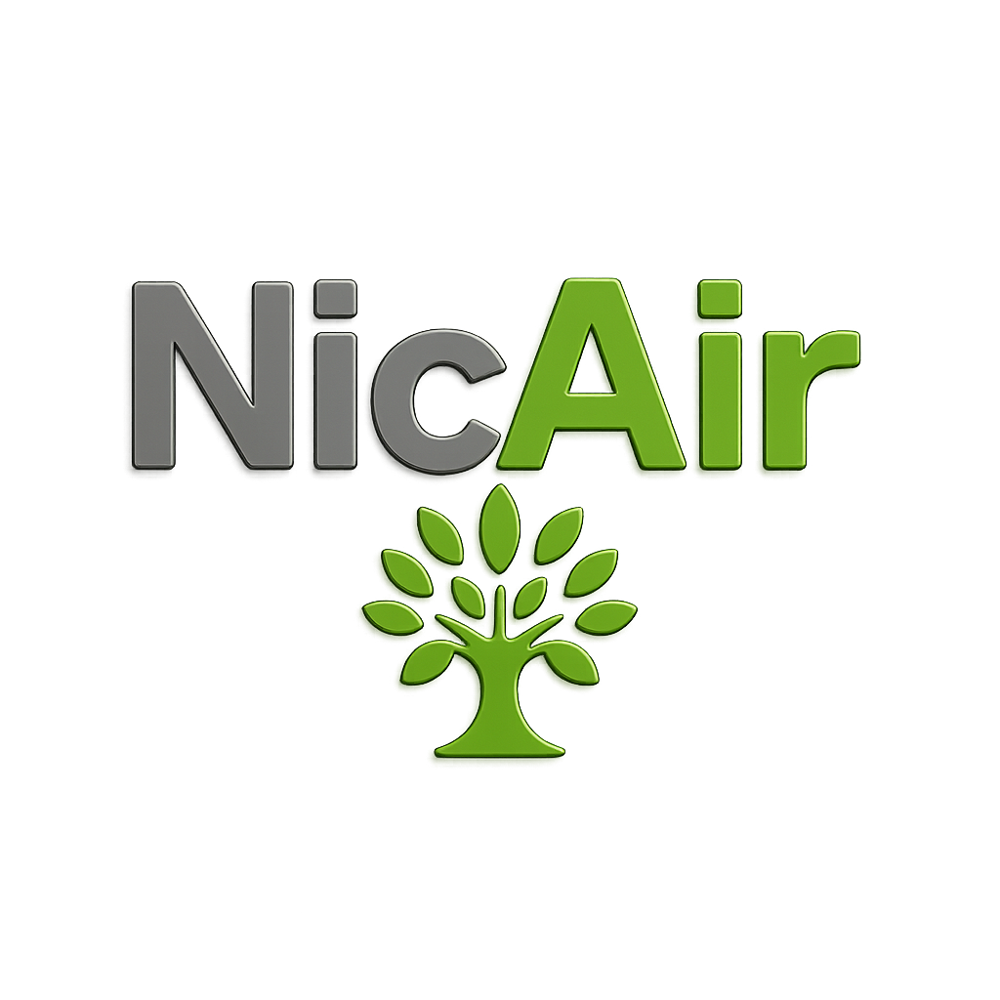
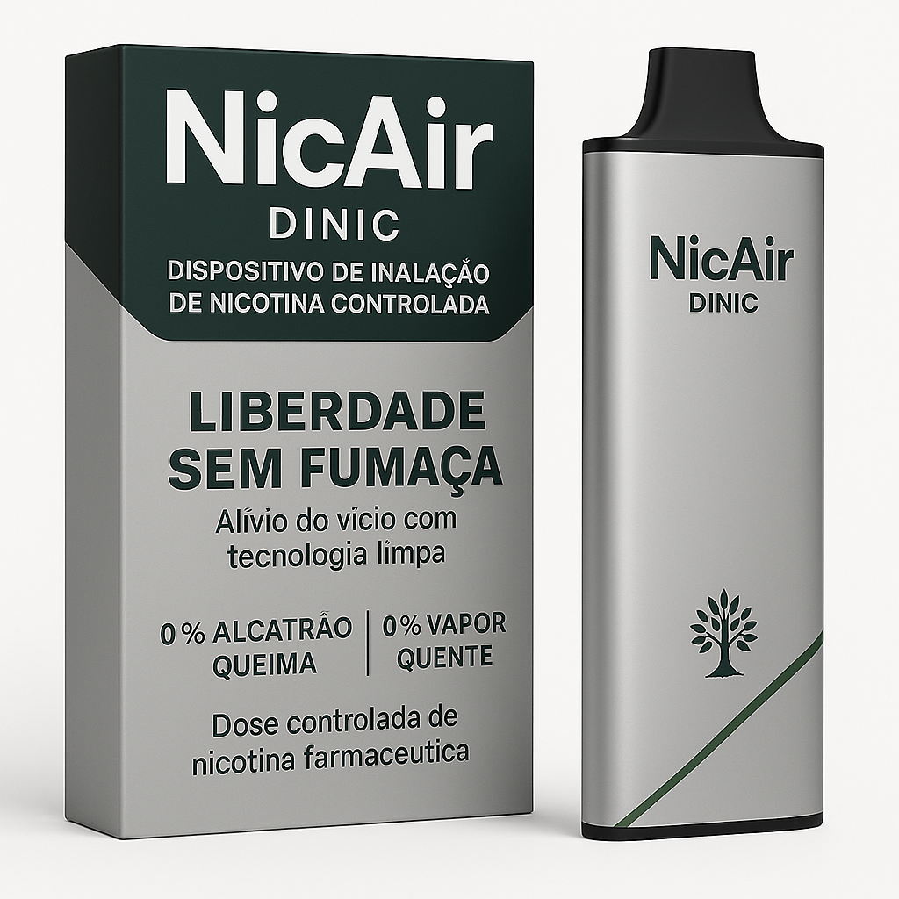

Dispositivo de Inalação de Nicotina Controlada (DINIC)
NicAir é uma solução inovadora para quem deseja parar de fumar sem abrir mão da experiência sensorial. Um inalador sem combustão, sem vapor e sem bateria que entrega microdoses controladas de nicotina com segurança farmacêutica.

Ao aspirar pelo bocal do NicAir, a pressão negativa ativa uma válvula que libera uma névoa leve contendo nicotina, absorvível pelas vias aéreas superiores. A sensação lembra o vape, mas com controle total e sem os riscos associados ao vapor.
Bruno Melo
Email: contato@nicair.com.br
Instagram: @nicair.dinic